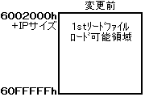
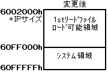
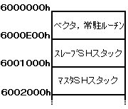

★INDEX
▲
|STN-31
|STN-32
|STN-34
|STN-35
|STN-36
|STN-38
|STN-39
▼
★INDEX
▲
|STN-31
|STN-32
|STN-34
|STN-35
|STN-36
|STN-38
|STN-39
▼
STN-35
１stリードファイル領域の変更
発行番号： | STN-35 |
|---|
発 行 日： | 95/06/21 |
|---|
メディア： | ●共 通 | ○CD-ROM | ○カートリッジ | ○その他 |
|---|
関 連： | ●プログラム | ○ハード | ○マニュアル | ○ツール | ○ゲーム | ○バグ | ○その他 |
|---|
情報区別： | ●新 規 | ○変 更 | ○追 加 |
|---|
重 要 度： | ●厳 守 | ○推 奨 | ○参 考 | ○その他 |
|---|
添付資料： | ●無 | ○有 |
|---|
件名補足： | |
|---|
内 容
■１stリードファイルのロード可能領域の変更
- 1stリードファイルのロード可能領域が下記の領域に変更されました。また、この変更に伴う他への影響はありません。
＜図１・メモリマップ１＞

→

- 60FF0000H〜60FFFFFHは、システムが使用しますので、1stリードファイルをロードしてはいけません。
- 1stリードファイルをロード完了後は、アプリケーションに解放されます。
■システムワーク領域とアプリケーションへの解放領域
- 6000000H〜6001FFFHは、システムが使用しますので、アプリケーションで使用してはいけません。ただし、6000E00H 〜 6001FFFHのスタックの使用は許可します。
- ＩＰ処理が完了して、アプリケーションが起動した後は、
- マスタＳＨのスタックを他に用意すれば、6001000Hまでアプリケーションで使用可能です。
- スレーブＳＨのスタックも他に用意すれば、6000E00Hまでアプリケーションで使用可能です。
＜図２・参考例＞

以上
★INDEX
▲
|STN-31
|STN-32
|STN-34
|STN-35
|STN-36
|STN-38
|STN-39
▼
Copyright SEGA ENTERPRISES, LTD., 1997